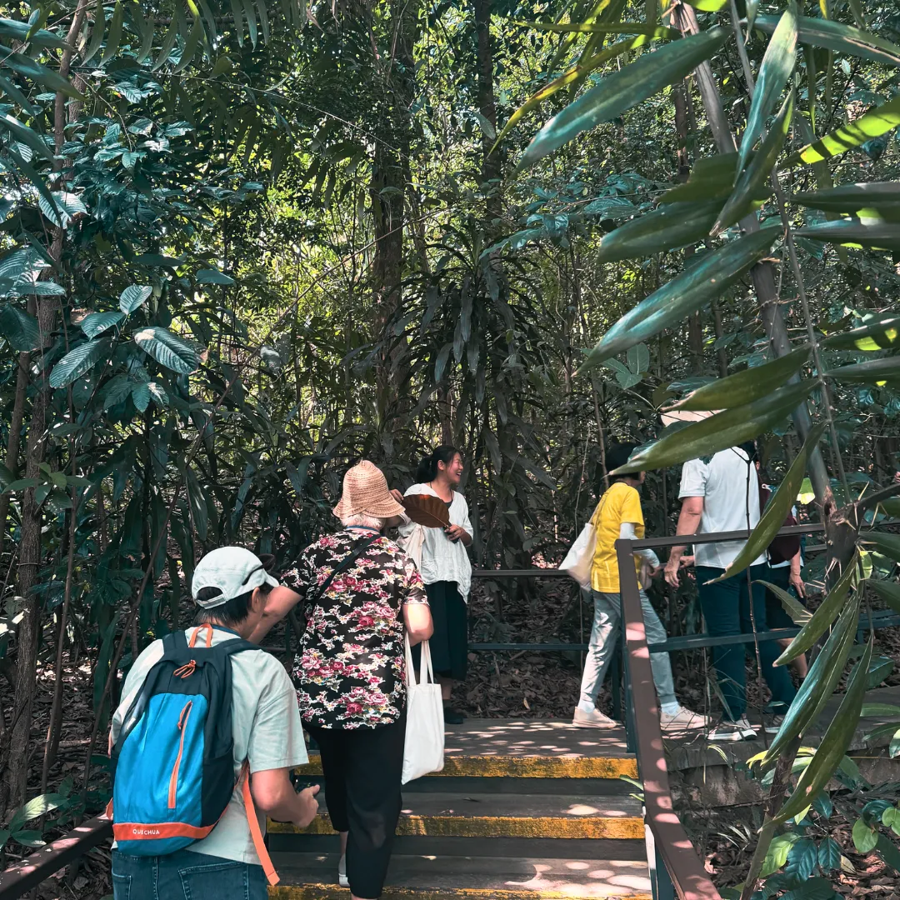
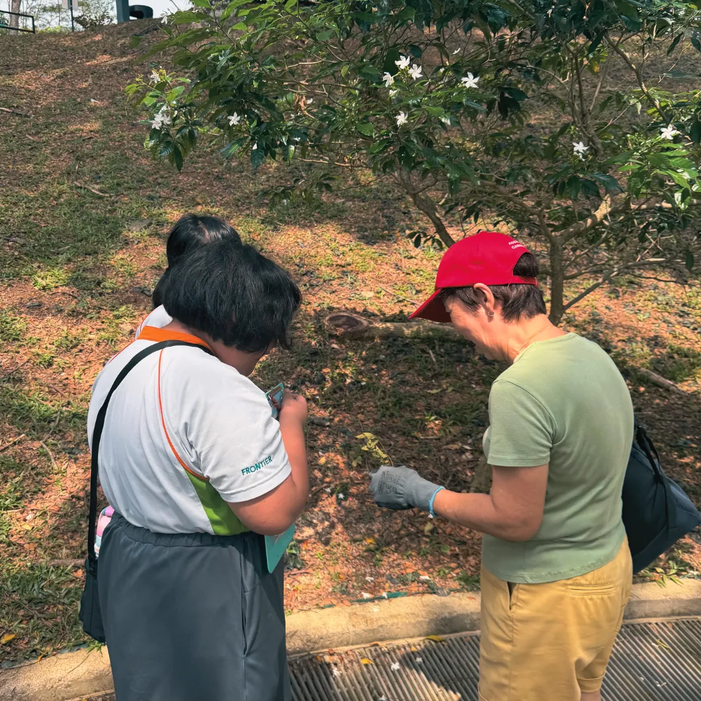

Nature-based activities
Guided walks, sensory exploration, plant-based making and activities designed around your community.
Learn moreWe bring the living world closer through nature-based learning, meaningful outdoor experiences and plant-centred programmes that support curiosity, connection and wellbeing.

Intergenerational connections in nature.A leaf can become a science lesson. A garden can offer an opportunity to practise everyday skills. A quiet moment beneath a tree can create space for reflection.
At Second Nature, we incorporate plants, natural materials and the outdoors as starting points for purposeful experiences. Sessions are adapted to participants' interests, abilities, comfort and learning goals.
From the classroom and community garden to forest paths and care settings, we help people engage with nature in ways that matter to them.
Guided walks, sensory exploration, plant-based making and activities designed around your community.
Learn moreUse leaves, twigs, shadows and water to investigate concepts such as buoyancy, light refraction and ecosystems.
Learn moreMindful noticing, reflection, sensory experiences and gentle engagement with green spaces.
Learn morePlanting and gardening activities that may support participation, routine, connection and everyday skills.
Learn moreSocial and intergenerational activities involving natural materials, gardens and shared tasks.
Learn moreSupport for nature spaces, facilitator learning, programme design and the assessment of outcomes.
Learn moreOur programmes are inspired by Forest School, forest therapy, nature-based interventions, therapeutic horticulture and recreational therapy.
These inspirations help us shape sessions that are flexible, people-centred and data-driven, with learning drawn from participant feedback and pre- and post-programme evaluations where relevant.
Offer prompts, choices and space for participants to ask questions, investigate and learn at their own pace.
Connect nature activities to practical skills, personal reflection and what matters to each group.
Consider access, consent, safety, weather, plants and the living environment throughout the programme.

Observe. Ask. Try. Reflect.We started as the ground-up initiative Reconnect with Nature in April 2024.
A ground-up initiative begins with a simple aim: bring nature closer to people.
New funding helps us bring our programmes to more communities.
Additional funding supports further activity and reach.
A new name for our growing work across learning, wellbeing and community engagement.
We ask about your participants, goals, setting, access needs and comfort with nature.
We suggest suitable activities, engagement methods, materials and a practical session flow.
We review plant and site risks, brief the team and facilitate with room for participant choice.
Where agreed, we gather feedback and observations to help review the programme.
Learn about our leadership team and the advisors who guide our work.
Meet our team ↗

See below for insight to our programmes.
Plant sensitivities, allergies, insects, heat, accessibility and familiarity with outdoor spaces are part of our planning. Participation is by invitation, not pressure.
Our safety approach ↗Share your objectives and participant needs. We will work with you to plan a suitable programme.
* Based on Second Nature pre- and post-programme evaluations. Figures reflect self-reported responses and do not represent clinical treatment outcomes.